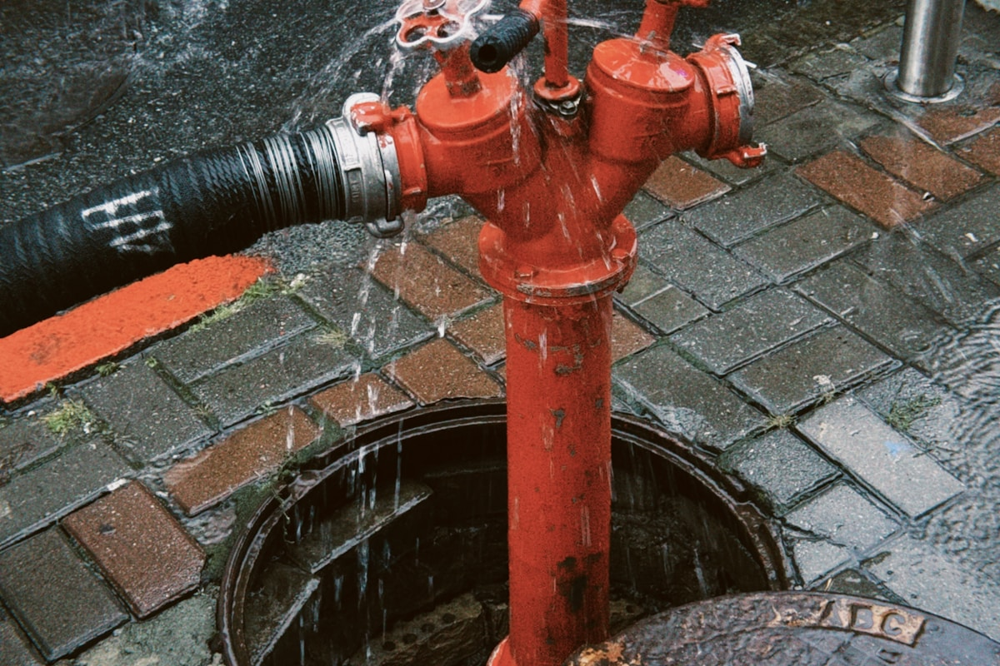

Severe weather events including heavy rainstorms, hurricanes, tropical storms, and flash floods can cause devastating water damage to Westminster properties. Wind-driven rain forces water through roof damage, broken windows, and compromised siding. Roof leaks can saturate insulation, ceilings, and wall cavities. Flash flooding overwhelms drainage systems and sends water into lower levels. When storms damage your property, Westminster Restoration provides emergency response to minimize water intrusion, extract standing water, and begin the restoration process immediately.
Our storm damage repair services encompass the full spectrum of weather-related water damage — from emergency board-up and tarping to prevent further water intrusion, through complete water extraction, structural drying, and rebuilding of damaged components. We understand that storm damage often creates multiple problems simultaneously: roof damage allows water entry, which damages ceilings and walls, which leads to mold growth if not properly dried. Our comprehensive approach addresses all of these interconnected issues under one coordinated restoration plan.
Insurance documentation is critical after storm damage, and we provide thorough documentation of all damage including photographs, moisture readings, damage assessments, and detailed scope-of-work reports. We work directly with your insurance company throughout the claims process and can serve as your advocate to ensure fair assessment and compensation for storm-related damage to your property.

Signs You Need Storm Damage Repair in Westminster
Recognizing the warning signs early can save you time, money, and prevent significant damage to your property. Watch for these telltale signs that professional help is needed:
- Water stains appearing on ceilings or walls during or after storms
- Missing, damaged, or lifted shingles visible from the ground
- Water pooling in attic spaces, around chimneys, or near skylights
- Wet insulation in attic or wall cavities discovered after weather events
- Wind-driven rain entering through windows, doors, or wall penetrations
- Flooding in lower levels due to overwhelmed drainage systems
- Damaged or displaced flashing around roof penetrations, valleys, or edges
Act Before It Gets Worse
What seems like a minor issue today can turn into a major expense tomorrow. Call Westminster Restoration at (801) 306-8229 at the first sign of trouble.
Ready to Solve Your Storm Damage Repair Problem?
Get a free estimate from our expert team today.
Call (801) 306-8229 TodayFrequently Asked Questions About Storm Damage Repair
The Benefits of Professional Storm Damage Repair
Storm damage creates complex, interconnected repair needs that require experienced restoration professionals to address properly. A roof leak that seems minor from inside may have caused extensive hidden water damage to insulation, roof decking, and wall cavities that will lead to mold growth and structural deterioration if not properly identified and dried. Professional restoration technicians use thermal imaging and moisture meters to trace water paths and identify all affected areas.
Emergency board-up and tarping services also require proper technique to be effective. Improperly installed tarps can create additional problems by channeling water or failing under wind loads. Our crews are experienced in storm damage mitigation and use appropriate materials and methods to provide reliable temporary protection while permanent repairs are scheduled.
What to Expect From Our Storm Damage Repair
We follow a proven process to ensure every job is completed to the highest standards. Here's what you can expect when you choose Westminster Restoration:
Emergency Board-Up & Tarping
We secure your property by covering roof damage, boarding broken windows, and sealing breaches to prevent additional water intrusion while permanent repairs are planned.
Water Extraction & Assessment
All storm-related water is extracted. We conduct a thorough assessment of all affected areas using moisture meters and thermal imaging to map the full extent of damage.
Structural Drying
Commercial dehumidifiers and air movers dry all affected structural components including roof decking, insulation, wall cavities, and flooring to prevent mold growth.
Permanent Repairs & Reconstruction
Damaged roofing, siding, drywall, insulation, flooring, and other components are repaired or replaced. Your property is fully restored to pre-storm condition.
Not Sure What You Need?
Our experienced technicians can assess your situation and recommend the best solution.
Call (801) 306-8229 TodayMaintenance Tips for Storm Damage Repair
A little prevention goes a long way in avoiding expensive restoration emergencies. Here are our expert recommendations:
- Schedule annual roof inspections to identify and repair vulnerable areas before storm season
- Keep gutters and downspouts clear so water drains properly during heavy rains
- Trim trees near your home to reduce the risk of wind-driven branch damage
- Install impact-resistant windows or storm shutters in hurricane-prone areas
- Ensure proper attic ventilation and insulation to prevent ice dam formation
- Know how to shut off your main water supply in case of pipe damage during storms
- Document your property's condition with photos annually for insurance purposes
DIY vs. Professional Storm Damage Repair
Some simple tasks are suitable for DIY, but most water damage work benefits from professional tools, training, and experience. Here's a comparison:
| Factor | DIY Approach | Professional Service |
|---|---|---|
| Damage Assessment | May miss hidden water paths and damage | Thermal imaging traces water to all affected areas |
| Emergency Protection | Tarps may fail or cause more damage | Professional board-up and tarping techniques |
| Drying | Fans can't dry wall cavities or insulation | Commercial equipment dries entire building envelope |
| Mold Prevention | High risk if drying is incomplete | Scientific drying prevents mold growth |
| Insurance | May miss damage that should be claimed | Comprehensive documentation maximizes recovery |
| Repairs | Cosmetic fixes over hidden damage | Complete structural restoration |
Talk to a Storm Damage Repair Expert
The sooner you call, the sooner we can help. Reach Westminster Restoration for same-day service.
Get Help: (801) 306-8229